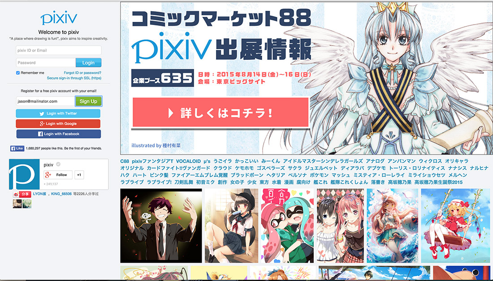
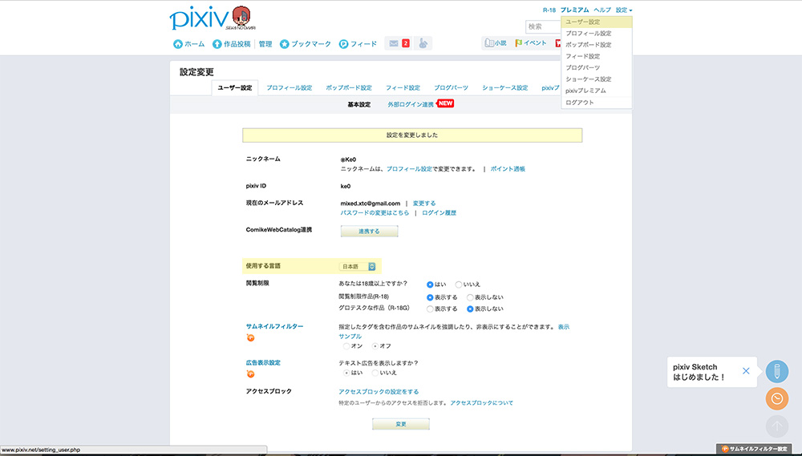

Since I was a child I’ve always been a big doodler, while I’m absolutely horribly (I never really applied myself) artist never the less I find myself doodling all the time when I’m bored or my attention waivers. While in Japan (I’m a military brat) I was always in awe of my classmates doodles and differing styles and honestly that was my absolute favorite part about being an exchange student. Upon moving back to the US, I kind of lost interest in art altogether, though I would still doodle when bored and otherwise.
A few years ago via the gaming forum NeoGAF I stumbled upon Pixiv a website dedicated to artists who either do it for a living or just love to doodle. The community is great and there are so many things to take from it. I often browse it looking for color schemes for personal web projects or just to admire different. There are some UX issues I have with it, especially for English users (in order to switch the language to English…you have to go through the site in Japanese and make your way to settings and change it to English. I’ll provide walkthrough below).
First thing one needs to do is sign up for a Pixiv account at Pixiv, the process is straight forward and doesn’t need much explanation. I recommend creating a secondary facebook account that you utilize for login authorization purposes on 3rd party websites (or twitter). If you’re going the email route, then just do the standard email dance. Once your account is set up, you will be presented with this page.

Well I lied, this is the settings page you’re trying to get to, simply go to the top right link and click the first one (highlighted) it will read 「ユーザ設定」click on it and you will be presented with the aforementioned page. Half way down the page you should find/see 「使用する言語」click on the accompanying drop down and you’ll see “English” in…English lol. Click on that and English will be used site-wide. The rest of the site kind of becomes self explanatory after you get past that point. As you follow, your feed will act like twitter, showing you images from those you follow as well as images those you follow like/favorite. I pretty much follow artists at complete random, but there are a few to get you started.
KR0NPR1NZ

mujiha

のば
![Fantasy Bridge, Mythical City]